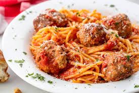

Spaghetti and Meatballs

Description
Awesome baked spaghetti and meatballs! Well worth the time!
Ingredients
- 2 Eggs
- 1 ¼ pounds ground beef
- ¼ cup Italian-seasoned bread crumbs
- ¾ tablespoon dried oregano, divided
- ¾ tablespoon garlic powder, divided
- ¾ tablespoon ground black pepper, divided
- ¾ tablespoon dried basil, divided
- 1 tablespoon olive oil, or as needed
- 1 onion, chopped
- 2 (6.5 ounce) cans tomato sauce
- 1 (6 ounce) can tomato paste
- 1 (6 ounce) can sliced mushrooms
- 1 (14 ounce) package spaghetti
- ¼ cup grated Parmesan cheese, or to taste (Optional)
Steps
- Preheat the oven to 350 degrees F (175 degrees C).
- Mix eggs and bread crumbs together in a bowl. Add ground beef. Add 1/2 of the oregano, garlic powder, black pepper, and basil. Mix well. Shape into meatballs that are about 1 inch in diameter.
- Heat oil in a skillet over medium-low heat. Cook meatballs in the pan with onion until golden brown, 7 to 10 minutes. Add tomato sauce, tomato paste, mushrooms, and remaining oregano, garlic powder, black pepper, and basil. Simmer for about 10 minutes.
- Meanwhile, bring a large pot of lightly salted water to a boil. Cook spaghetti in the boiling water, stirring occasionally, until tender yet firm to the bite, about 12 minutes. Drain.
- Place spaghetti into a 9x13-inch baking pan and pour sauce evenly over the top. Top with Parmesan cheese and cover with aluminum foil.
- Bake in the preheated oven until bubbly and and cheese is melted, about 30 minutes.
Back to Homepage